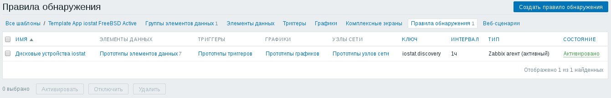
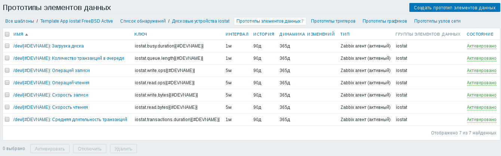
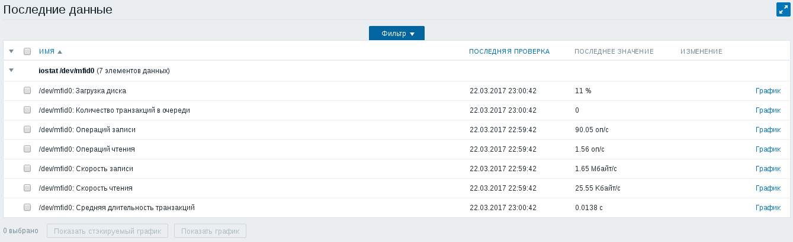

Для оценки производительности дисковой подсистемы FreeBSD можно воспользоваться утилитой iostat. Однако полную картину нагрузки на дисковую подсистему можно получить только собирая статистику за достаточно долгий срок. Как минимум это сутки, а лучше всего собрать статистику за неделю. По недельной статистике можно легко найти периоды максимальной нагрузки и связать их с периодически выполняющимися в системе задачами. Имея статистику за неделю, можно подобрать оптимальное время запуска процедуры резервного копирования. В этой статье речь пойдёт о том, как собирать статистику от утилиты iostat в Zabbix.
Для начала изучим документацию на саму команду iostat из состава FreeBSD. Простой вызов команды iostat отображает статистику дисковых устройств вместе со статистикой процессора и терминала. К счастью, у команды iostat имеется несколько опций, полезных для наших целей:
Последняя опция - самая полезная. В интернете можно встретить шаблоны, в которых для сбора статистики команда iostat запускается на определённый интервал времени. У такого подхода есть как минимум два недостатка. Во-первых, в промежутках между запусками iostat статистика не собирается. Во-вторых, из-за того, что команда выполняется долго, используют промежуточный файл, в который периодически сохраняют собранную статистику, а потом извлекают из этого файла с помощью команд grep или awk. В общем, увидев в какой-нибудь очередной статье в интернете такой способ съёма статистики, я морщусь и перехожу к другой статье.
Команда iostat, вызванная со всеми этими опциями, выведет примерно такой результат:
# iostat -dxI extended device statistics device r/i w/i kr/i kw/i wait svc_t %b mfid0 6994332913.0 13128877288.0 544161035422.5 493573917948.0 0 5.1 18
Смысл столбцов такой:
Несмотря на то, что указана опция -I, предписывающая выводить накопленные значения счётчиков, числа в последних трёх колонках являются текущими средними значениями. Если судить по страницам руководства на официальном сайте, эти колонки стали показывать накопленные значения счётчиков только начиная с FreeBSD 10: FreeBSD 10.0-RELEASE iostat(8). У меня FreeBSD 10 пока нигде нет, поэтому отладить шаблон для соответствующих версий iostat пока возможности не было.
Добавим в файл конфигурации Zabbix-агента /usr/local/etc/zabbix24/zabbix_agentd.conf следующие строки:
UserParameter=iostat.discovery,iostat -dxI | awk 'BEGIN { printf "{\"data\":["; } { if (NR > 3) printf ","; if (NR > 2) printf "{\"{#DEVNAME}\":\"" $1 "\"}"; } END { printf "]}"; }'
UserParameter=iostat.read.ops[*],/usr/sbin/iostat -dxI | awk '$$1 == "$1" { print $$2; }'
UserParameter=iostat.write.ops[*],/usr/sbin/iostat -dxI | awk '$$1 == "$1" { print $$3; }'
UserParameter=iostat.read.bytes[*],/usr/sbin/iostat -dxI | awk '$$1 == "$1" { print 1024 * $$4; }'
UserParameter=iostat.write.bytes[*],/usr/sbin/iostat -dxI | awk '$$1 == "$1" { print 1024 * $$5; }'
UserParameter=iostat.queue.length[*],/usr/sbin/iostat -dxI | awk '$$1 == "$1" { print $$6; }'
UserParameter=iostat.transactions.duration[*],/usr/sbin/iostat -dxI | awk '$$1 == "$1" { print $$7; }'
UserParameter=iostat.busy.duration[*],/usr/sbin/iostat -dxI | awk '$$1 == "$1" { print $$8; }'
После внесения изменений в файл конфигурации Zabbix-агента, не забудьте его перезапустить:
# /usr/local/etc/rc.d/zabbix_agentd restart
Я подготовил два варианта шаблона:
В шаблоне имеется правило низкоуровневого обнаружения, которое находит все дисковые устройства, статистику по которым выдаёт iostat:
Для каждого найденного устройства создаётся семь элементов данных, соответствующих колонкам из вывода iostat:
Страница последних данных для одного из дисков выглядят следующим образом:
Элемент данных с названием "Загрузка диска" показывает процент времени, в течение которого диск занимается обработкой хотя бы одной транзакции.